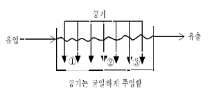

환경기능사 (2006-04-02 기출문제)
1과목: 대기오염방지
1. 다음 대기오염물질 중 물리적 상태가 다른 것은?
- 먼지(dust)
- 매연(smoke)
- 검댕(soot)
- 황산화물(SOx)
(정답률: 59%)

2. 유해가스의 흡착처리에서 흡착제의 선택시 고려하여야 할 조건으로 적합하지 않은 것은?
- 흡착률이 우수해야 한다.
- 흡착물질의 회수가 숴워야 한다.
- 흡착제의 재생이 용이해야 한다.
- 기체의 흐름에 대한 압력손실이 커야 한다.
(정답률: 74%)
3. 중력집진장치의 일반적인 특성이 아닌 것은?
- 운전유지 비용이 큼
- 압력손실이 적음
- 제진효율이 좋지 않음
- 장치의 구조가 간단함
(정답률: 50%)
4. 중유의 탈황법으로 가장 실용적이며 많이 사용하는 방법은?
- 석회석에 의한 흡수탈황법
- 활성탄에 의한 흡착탈황법
- 아황산소다 탈황법
- 접촉수소화 탈황법
(정답률: 29%)
5. 어떤 집진시설의 집진율이 99%이고, 집진시설 유입구의 분진농도가 15.5g/m3일 때 유출구의 분진농도(g/m3)는?
- 0.01
- 0.135
- 0.145
- 0.155
(정답률: 51%)
6. 연소과정에서 생성되는 질소산화물의 특성 중 맞는 것은?
- 화염속에서 생성되는 질소산화물은 주로 NO2 이며, 소량의 NO를 함유한다.
- 질소산화물의 생성은 연료중의 질소와 공기중의 질소가 산소와 반응하여 이루어진다.
- 화염온도가 낮을수록 질소산화물의 생성량은 커진다.
- 배기가스중 산소분압이 낮을수록 생성이 커진다.
(정답률: 59%)
7. 유황을 1.6% 함유하는 중유 10ton을 완전연소시키면 몇 NMm3 의 SO2가 발생하는가?(단, 유황은 전량 SO2로 반응한다고 가정함)
- 112
- 160
- 224
- 320
(정답률: 22%)
8. 집진기 출구가스의 먼지농도가 0.02g/m3, 먼지통과율 0.5%일 때 입구먼지농도(g/m3)는 얼마인가?
- 3.5g/m3
- 4.0g/m3
- 4.5g/m3
- 8.0g/m3
(정답률: 66%)
9. 27℃, 780mmHg 상태에서 CO2 44g이 차지하는 부피는 몇 L인가?
- 23.4L
- 24.6L
- 25.7L
- 26..8L
(정답률: 49%)
10. 대기오염물질을 배출하는 굴뚝에서 유효고란 무엇을 말하는가?
- 지상에서 굴뚝 끝까지의 총 높이
- 굴뚝에서 대기의 안정층까지 높이
- 굴뚝높이와 연기의 수직상승 높이
- 지상에서 대기안정층까지의 높이
(정답률: 60%)
11. 다음 중 기체연료의 특징으로 볼 수 없는 것은?
- 취급에 위험성이 있다.
- 완전연소하려면 많은 과잉공기가 필요하다.
- 수송과 저장이 불편하고 저장탱크, 배관공사 등 시설비가 많이 든다.
- 점화와 소화가 용이하다.
(정답률: 53%)
12. 대기오염공정시험방법에서 용기라 함은 시험용액 또는 시험에 관계된 물질을 보존, 운반 또는 조작하기 위하여 넣어두는 것으로 이에 속하지 않는 것은?
- 밀폐용기
- 투시용기
- 기밀용기
- 차광용기
(정답률: 66%)
13. 집진시설을 선택하기 위하여 고려하여야 할 요소와 가장 거리가 먼 것은?
- 입자의 밀도와 입경분포
- 먼지의 물리적, 화학적 특성
- 먼지의 농도와 예상 투시도
- 배기가스의 부식성과 용해성
(정답률: 47%)
14. 로스엔젤레스형 스모그 발생조건과 관련이 없는 것은?
- 석유계 연료
- 24~32℃
- 광화학적 반응
- 방사성 역전형태
(정답률: 72%)
15. 여과집진장치의 주된 집진원리와 가장 거리가 먼 것은?
- 차단
- 관성충돌
- 확산
- 응집
(정답률: 46%)
2과목: 폐수처리
16. 연속회분식 반응조(SBR)에 관한 설명으로 적합지 않은 것은?
- 처리용량이 큰 처리장에는 적용하기 곤란하다.
- 주기적인 슬러지 반송이 필요하다.
- 운전주기의 조절로 질소의 제거가 가능하다.
- 활성슬러지법과 비교하면 에너지 절약형이라고 볼 수 있다.
(정답률: 29%)
17. 적조현상을 발생시키는 주된 원인 물질은?
- 카드늄(Cd)
- 인(P)
- 수은(Hg)
- 염소(Cl)
(정답률: 75%)
18. 살균 강도가 가장 큰 염소 결합 형태는?
- HOCl
- OCl-
- NHCl
- NHCl2
(정답률: 72%)
19. 혐기성 소화조의 운전중 소화가스 발생량이 현저희 감소하였다. 예상할 수 있는 원인과 거리가 먼 것은?
- 저농도의 슬러지 유입
- 소화조 내부의 온도저하
- 과다한 유기산 생성
- 과다교반
(정답률: 45%)
20. 해수의 화학적 설질에 관한 설명으로 맞지 않은 것은?
- 해수내 전체질소 중 35%정도는 암모니아성 질소, 유기질소 형태이다.
- 해수의 주요성분농도비는 항상 일정하다.
- 해수의 pH는 약 6.9~7.3 정도로 매우 안정하다.
- 해수의 Mg/Cd비는 담소에 비하여 크다.
(정답률: 60%)
21. 모래, 자갈, 뼈조각등의 무기질로 구성된 혼합물을 무엇이라고 하는가?
- screenig
- grit
- sludge
- scum
(정답률: 71%)
22. 성층현상이 뚜렷한 계절을 알맞게 짝지은 것은?
- 겨울, 가을
- 가을, 봄
- 겨울, 여름
- 봄, 여름
(정답률: 74%)
23. 폭 10m, 길이 30m, 높이 3m 인 장방형 침전지에 0.⑤m3/sec 유량이 유입 될 때 체류시간(hr)은?
- 3
- 4
- 5
- 6
(정답률: 47%)
24. 수소이온농도가 3.9 ×10-6mol/L 인 경우 용액의 pH는?
- 5.4
- 4.4
- 3.4
- 2.4
(정답률: 25%)
25. 질소화합물의 분해 과정을 알맞게 나타낸 것은?
- 유기물 → 질산성질소 → 아질산성질소 → 암모니아성질소
- 유기물 → 아질산성잘소 → 질산성질소 → 암모니아성질소
- 유기물 → 암모니아성질소 → 아질산성질소 → 질산성질소
- 유기물 → 유기질소 → 질산성질소 → 아질산성질소
(정답률: 52%)
26. 폭기조내 슬러지 용적지표(SVI : Sludge Volume Index)가 높다면 다음 중 어느 것을 의미하는가?
- 슬러지의 밀도가 증가하였다.
- 슬러지내 휘발성분이 즐어들었다.
- 슬러지 팽화의 우려가 있다.
- 슬러지는 아주 빨리 침강한다.
(정답률: 62%)
27. 폐수 7570m3/day의 유량에 염소가 92kg/day로 주입되고 있다. 잔염류소량이 0.15mg/L라고 할 때 폐수중에 소비되는 염소 농도는?
- 약 7.4mg/L
- 약 9.2mg/L
- 약 10.8mg/L
- 약 12.0mg/L
(정답률: 28%)
28. 0.01M NaOH 1L를 H2SO4로 중화가 적정할 때 이론적으로 소비되는 황산량은?
- 5mL
- 10mL
- 15mL
- 20mL
(정답률: 19%)
29. 생물학적 원리를 이용하여 인(P) 만을 효과적으로 제거하기 위한 고도처리 공법으로 가장 적절한 것은?
- 4단계 Bardenpho 공법
- 5단계 Bardenpho 공법
- A/O 공법
- A2O 공법
(정답률: 69%)
30. 혐기성 소화과정에서 에너지원이 될 수 있는 최종생성물은?
- CO2
- CH4
- H2S
- NH3
(정답률: 51%)
31. 폐수량이 1000m3/일, BOD 100mg/L의 총 BOD 부하량은?
- 1kg/일
- 10kg/일
- 100kg/일
- 1000kg/일
(정답률: 37%)
32. 다음 중 폐수의 응집처리시 응집의 원리로서 볼 수 없는 것은?
- Zeta potential을 감소시킨다.
- Van Der Waals를 증가시킨다.
- 응집제를 투여하여 입자끼리 뭉치데 한다.
- 콜로이드 입자의 표면전하를 증가시킨다.
(정답률: 48%)
33. 그림과 같은 재래식 화성슬러지조에서 조내의 용존 산소 농도에 대한 설명으로 맞는 것은?

- ① 지점이 가장 높다.
- ② 지점이 가장 높다.
- ③ 지점이 가장 높다.
- 어디나 동일하다.
(정답률: 43%)
34. 어느 하수처리장에서 활성슬러지 공법으로 처리하고자 한다. 유량이 20,000m3/day, BOD 250mg/L인 하수를 매일 24시간 연속하여 Blower를 가동시켜 150m3/min율로 공기를 공급, BOD를 80% 제거한다면 제거된 BOD 1kg당 소모된 공기량은?
- 43 m3air/kg-BOD
- 54 m3air/kg-BOD
- 62 m3air/kg-BOD
- 78 m3air/kg-BOD
(정답률: 47%)
35. 폐수속에 있는 부유물 중에서 스크린으로 제거되는 것으로 가장 적절한 것은?
- 그릿
- 슬러지
- 웨어
- 협잡물
(정답률: 29%)
3과목: 폐기물처리
36. 폐기물 고체연료(RDF)의 조건에 대한 설명 중 잘못된 것은?
- 열량이 높은 것
- 함수량이 높은 것
- 대기오염이 적을 것
- 성분 배합률이 균일할 것
(정답률: 70%)
37. 쓰레기를 폐쇄처리하는 이유와 가장 거리가 먼 것은?
- 밀도의 감소
- 입자크기의 균일화
- 유가물의 분리
- 비표면적의 증가
(정답률: 39%)
38. 지역이기주의를 나타내는 용어로 폐기물의 최종매립지 확보를 어렵게 만드는 현상은?
- NIMBY 현상
- PIMBY 현상
- 3D 현상
- 3P 현상
(정답률: 61%)
39. 함수율이 95%인 슬러지 20m3를 75%로 탈수하였을 때 슬러지 체적은 몇 m3로 되는가?
- 2
- 3
- 4
- 5.
(정답률: 40%)
40. 쓰레기 수거노선을 결정할 때 고려사항으로 틀린 것은?
- U자형 회전을 피하여 수거한다.
- 가능한 한 시계방향으로 수거노선을 정한다.
- 아주 많은 양의 쓰레기가 발생되는 발생원은 하루 중 가장 나중에 수거한다.
- 적은 양의 쓰레기가 발생하나 동일한 수거빈도를 받기를 원하는 수거지점을 가능한 한 같은 날 왕복내에서 수거 하도록한다.
(정답률: 75%)
41. 다음 중 수분 및 고형물 측정에 필요하지 않는실험기구는?
- 증발접시
- 전자저울
- jar-테스트
- 데식케이터
(정답률: 75%)
42. 쓰레기 발생량이 24,000kg/일이고 발생량이 500kcal/kg이라면 로내 열부하가 50,000kcal/m3·hr인 소각로의 용적은? (단, 1일 가동시간은 12hr이다.)
- 20m3
- 40m3
- 60m3
- 80m3
(정답률: 34%)
43. 다음 분뇨의 설질을 설명한 것 중에서 틀린 것은?
- 분뇨는 고액분리가 어렵다.
- 뇨의 휘발성고형물의 80%~90%는 질소화합물이다.
- 분과 뇨의 고형물질이 비는 약 7:1정도이다.
- 분뇨는 시간에 따른 특성변화가 적다.
(정답률: 35%)
44. 0.5m3/분의 송분펌프로 2시간 가동했을 때 송분된 분뇨의 양은 얼마인가?
- 50m3
- 60m3
- 70m3
- 80m3
(정답률: 51%)
45. 슬러지 개량(conditioning)의 목적으로 가장 알맞은 것은?
- 슬러지 용출특성을 향상시킨다.
- 슬러지 농축특성을 향상시킨다.
- 슬러지 탈수특성을 향상시킨다.
- 슬러지 안전화특성을 향상시킨다.
(정답률: 63%)
46. 쓰레기 수송하는 방법 중 자동화, 무공해화가 가능하고 눈에 띄지 않는다는 장점을 가지고 있으며 공가수송, 반죽수송, 캡슐수송등의 방법으로 쓰레기를 수거하는 방법은?
- 모노레일 수거
- 관거 수거
- 콘베이어 수거
- 콘테이너 철도수거
(정답률: 68%)
47. 밀도가 0.5톤/m3인 폐기물을 0.8톤/m3으로 압축하였다면 부피 감소율은?
- 23.7%
- 27.5%
- 33.5%
- 37.5%
(정답률: 36%)
48. 폐기물 중 유기물을 완전 연소시키기 위한 필요조건 항목과 가장 거리가 먼 것은?
- 온도
- 기압
- 연소시간
- 혼합
(정답률: 64%)
49. 인구 18만명인 도시에서 1일 1명당 2.5kg의 원단위로 폐기물이 발생된 경우 그 발생량은?(단, 폐기물 밀도는 500kg/m3d이다.)
- 180m3/day
- 360m3/day
- 720m3/day
- 900m3/day
(정답률: 41%)
50. 쓰레기를 연소시키기 위한 이론공기량이 10Sm3/kg이고 공기비가 101일 때 실제로 공급된 공기량은?
- 0.5Sm3/kg
- 0.6Sm3/kg
- 10.0Sm3/kg
- 11.0Sm3/kg
(정답률: 49%)
51. 폐기물의 성분을 분석한 결과 가연성 물질이 무게로 30%였다. 밀도 500kg/m3인 폐기물 5m3가 가지는 가연성 물질의 양은?
- 800kg
- 750kg
- 650kg
- 600kg
(정답률: 47%)
52. 인구 100,000며인 도시에서 발생하는 쓰레기를 적재용량 15m3인 트럭 20대를 이용하여 매일 수거한다. 수거된 쓰레기의 평균 밀도가 350kg/m3이라면, 1인당 1일 배출하는 양은? (단, 트럭은 1회 운행기준)
- 0.98kg
- 1.⑤kg
- 1.13kg
- 1.21kg
(정답률: 39%)
53. 쓰레기의 저위발영량을 측정하는 방법으로 알맞지 않은 것은?
- 추정식에 의한 방법
- 단열열량계에 의한 방법
- 흡착식에 의한 방법
- 원소분석에 의한 방법
(정답률: 42%)
54. 분뇨처리의 기본 목표가 아닌 것은?
- 안전화
- 유기화
- 감량화
- 안정화
(정답률: 56%)
55. 뜨거운 공기를 주입하여 모래를 부상, 가열시키고 상부에서 페기물을 주입하여 태우는 방식으로 슬러지, 폐유, 폐윤활유 등의 소각에 탁월한 성능을 가진 소각로는?
- 다단로
- 유동상
- 회전로
- 고정상
(정답률: 81%)
4과목: 소음 진동학
56. 마스킹 효과에 관한 설명 중 맞지 않는 것은?
- 저음이 고음을 잘 마스킹 한다.
- 두음의 주파수사 비슷할 때는 마스킹 효과가 대단히 커진다.
- 두음의 주파수 차가 클 때는 Doppler 현상에 의해 효과가 감소한다.
- 음파의 간섭에 의해 일어난다.
(정답률: 52%)
57. 측정된 진동레벨이 배경진동레벨보다 몇 dB이상 높으면(크면) 배경진동의 영향을 무시할 수 맀는가?
- 5dB
- 10dB
- 15dB
- 20dB
(정답률: 43%)
58. 음파가 난입사하고 질량법칙이 적용되는 경우,교실의 단일벽 면밀도가 300kg/m2 이라면 0.1KHz에서의 투과 손실은?(단, TL = 18logmf-44 적용)
- 26.6dB
- 36.6dB
- 46.6dB
- 56.6dB
(정답률: 46%)
59. 어느 벽체의 투과손실 값이 32dB이라면 이 벽체의 투과율은?
- 5.3×10-3
- 6.3×10-4
- 5.3×10-5
- 6.3×10-5
(정답률: 51%)
60. 무지향성 점음원이 자유공간에 있을 떄 지향계수는?
- 0
- 1
- 2
- 4
(정답률: 35%)